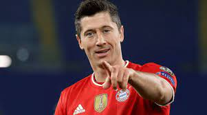

Louco por ti Barcelona
O jornal espanhol aponta as posições que o Barça pretende reforçar: um goleiro, um zagueiro, dois laterais, um meio-campista e dois atacantes. A ideia do treinador é ter pelo menos dois jogadores competitivos para cada posição e o periódico também cita os principais alvos do clube.
Para o gol, o Barça quer contar com um reserva que possa disputar a posição com Ter Stegen, já que a saída do brasileiro Neto é dada como quase certa. Portanto, os Culés podem dar chance para o jovem Iñaki Peña, de 23 anos e atualmente emprestado ao Galatasaray, mas a contratação de um outro arqueiro não está descartada...
Na defesa, a equipe quer adquirir pelo menos mais um jogador para se juntar ao trio de zaga formado por Piqué, Araujo e Eric Garcia. E o 'Sport' dá como certo que Andreas Christensen, atleta de 26 anos do Chelsea, é o nome escolhido para chegar ao time do Camp Nou em uma transferência sem custos. Além disso, Xavi quer reforçar as duas laterais..
Outro jogador dos Blues é cotado para ocupar o lado direito da defesa. Trata-se do espanhol Cézar Azpilicueta, de 32 anos. Já para fazer sombra a Jordi Alba no lado esquerdo, o Barcelona monitora a situação de Alex Telles, Álex Moreno, Grimaldo, Javi Galán e Tagliafico, conforme noticiado pelo jornal..
O reforço para o meio de campo, por sua vez, já está praticamente confirmado. Franck Kessié, jogador de 25 anos do Milan, já tem contrato assinado para reforçar o Barça como agente livre, segundo a imprensa espanhola..
Fechando a lista de reforços, o clube catalão quer contar com dois novos atacantes para a próxima temporada. Um deles é o brasileiro Raphinha, do Leeds United, de 25 anos. O outro é ninguém mais, ninguém menos que Robert Lewandowski, centroavante de 33 anos do Bayern de Munique...
O 'Sport' finaliza afirmando que a contratação da dupla de atacantes "não será fácil" e que a especulada chegada de Haaland, do Borussia Dortmund, é dada como "impossível"...
"Sempre sonhei em jogar no Barcelona, desde pequeno, e agora que tenho a oportunidade, farei todo o esforço para dar muitas alegrias" Ronaldo de Assis Moreira.Disponivel em meusite.com.br 